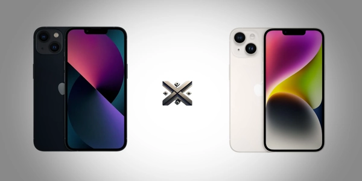

O iPhone 13 e o iPhone 14 são modelos que, à primeira vista, parecem bem semelhantes. Mas há diferenças importantes entre eles que podem influenciar sua decisão de compra em 2025. Neste artigo completo do Comparativo X, vamos mostrar ponto a ponto o que muda de um modelo para o outro, desde especificações técnicas até funções exclusivas.
Mesmo com o visual praticamente idêntico, alguns recursos extras no iPhone 14 podem fazer a diferença dependendo do seu perfil de uso. Além disso, o preço atual de cada um também pesa bastante na hora da escolha.

Visualmente, os dois aparelhos são quase idênticos. Ambos têm acabamento em alumínio com vidro na parte traseira e bordas planas. Mas há um detalhe importante: o iPhone 14 é levemente mais espesso (7,8 mm contra 7,65 mm) e um pouco mais pesado (172g contra 173g), o que não muda muito na prática.
Ambos os modelos também são resistentes à água e poeira, com certificação IP68. Isso significa que podem ser submersos em até 6 metros de profundidade por até 30 minutos, o que garante segurança contra acidentes como quedas em água ou uso sob chuva.
Qual o tamanho do iPhone 14? O iPhone 14 tem uma tela Super Retina XDR OLED de 6,1 polegadas, exatamente como o iPhone 13. Ambos têm resolução de 2532 x 1170 pixels, com 460 ppi de densidade. Em termos de tamanho de tela e qualidade de imagem, os dois entregam praticamente o mesmo resultado.
As cores do iPhone 13 são: Meia-noite, Estelar, Azul, Rosa, Verde e (PRODUCT)RED. É uma variedade equilibrada, com tons clássicos e outros mais chamativos.
O iPhone 14 tem: Azul, Roxo, Meia-noite, Estelar, (PRODUCT)RED e Amarelo (versão lançada posteriormente). As cores são parecidas com as do 13, mas o tom de azul e roxo muda bastante. O amarelo é exclusivo do 14.
Aqui está um ponto polêmico: o iPhone 14 usa o mesmo chip A15 Bionic do iPhone 13. No entanto, há uma pequena diferença. O iPhone 13 tem GPU de 4 núcleos, enquanto o 14 tem GPU de 5 núcleos, o mesmo chip presente no iPhone 13 Pro. Isso significa que o iPhone 14 tem desempenho gráfico ligeiramente superior, útil para jogos e edição de vídeo.
Na prática, ambos os modelos rodam qualquer aplicativo com fluidez. Em tarefas do dia a dia, a diferença é quase imperceptível.
A câmera traseira de ambos tem 12 MP, lente principal + ultrawide. Mas o iPhone 14 conta com melhorias internas, como maior abertura de lente (f/1.5 contra f/1.6 no iPhone 13), permitindo capturas melhores com pouca luz.
Outro destaque do iPhone 14 é o Modo Ação, que melhora vídeos em movimento, e o Photonic Engine, que melhora o processamento das imagens. Essas funções não estão no iPhone 13.
Na câmera frontal, o iPhone 14 também leva vantagem: a lente tem autofoco, o que melhora selfies e chamadas de vídeo.
Ambos têm boa autonomia, mas o iPhone 14 leva uma pequena vantagem. Ele tem uma bateria um pouco maior e otimizações internas. A Apple promete até 20 horas de reprodução de vídeo no iPhone 14, contra 19 horas no iPhone 13.
Quantos mAh tem o iPhone 13? A capacidade da bateria do iPhone 13 é de 3.240 mAh, enquanto o iPhone 14 tem 3.279 mAh. A diferença é mínima, mas suficiente para ganhar alguns minutos extras de uso.
O iPhone 14 traz algumas funções que o iPhone 13 não tem, como:
O iPhone 13 não possui essas funções.
Ambos estão disponíveis nas versões de 128 GB, 256 GB e 512 GB. Nenhum tem entrada para cartão microSD.
O iPhone 13 vem com carregador? Não. Nem o iPhone 13 nem o iPhone 14 vêm com carregador na caixa, apenas o cabo USB-C para Lightning. A Apple mantém essa política desde o iPhone 12.
Pressione o botão lateral + botão de volume pra cima ao mesmo tempo. A imagem é salva automaticamente na galeria.
Pressione e segure o botão lateral + botão de volume pra cima ou pra baixo, depois deslize na tela onde aparece “desligar”.
Acesse a Central de Controle (arraste de cima para baixo do lado direito da tela), toque no ícone de gravação. Para parar, toque na barra vermelha e confirme. Vale para o iPhone 14 também.
Como o iPhone 13 foi lançado em 2021, ele provavelmente receberá atualizações até 2027 ou 2028, seguindo o padrão da Apple de cerca de 6 a 7 anos de suporte. Ou seja, ainda tem bastante vida útil pela frente.
O iPhone 13 foi lançado oficialmente em setembro de 2021. Já o iPhone 14 chegou em setembro de 2022.
Sim, principalmente se você encontrar um bom preço. O iPhone 13 continua rápido, tira boas fotos, tem ótima bateria e receberá atualizações por vários anos. Além disso, o preço costuma ser bem mais baixo que o do iPhone 14.
Os preços variam bastante, mas em média:
Vale lembrar que esses valores podem mudar com promoções, câmbio e estoques.
| Especificação | iPhone 13 | iPhone 14 |
|---|---|---|
| Processador | A15 Bionic (4 núcleos GPU) | A15 Bionic (5 núcleos GPU) |
| Câmera frontal | 12 MP, sem autofoco | 12 MP, com autofoco |
| Detecção de Acidente | Não | Sim |
| Emergência via satélite | Não | Sim (em regiões compatíveis) |
| Modo Ação | Não | Sim |
| Espessura | 7,65 mm | 7,8 mm |
| Peso | 173 g | 172 g |
Se você quer o melhor custo-benefício em 2025, o iPhone 13 é uma excelente escolha. Ele é rápido, tira boas fotos, tem bateria decente e ainda vai receber atualizações por vários anos. Além disso, está com preço mais acessível.
O iPhone 14 é uma opção mais atualizada, com funções extras de segurança, câmera frontal melhor e pequenas melhorias de desempenho e bateria. Vale a pena para quem busca esses recursos extras e pode pagar a mais por isso.
Para uso geral, o iPhone 13 ainda entrega muito em 2025 — especialmente se encontrar em promoção.